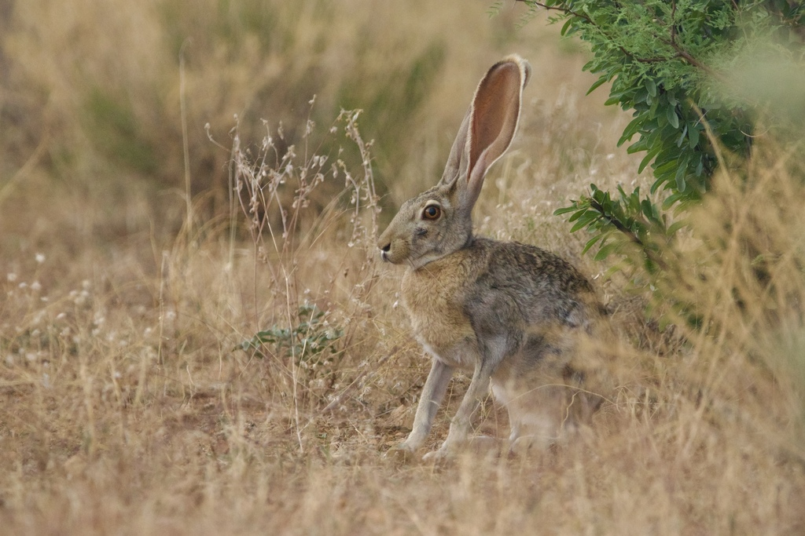
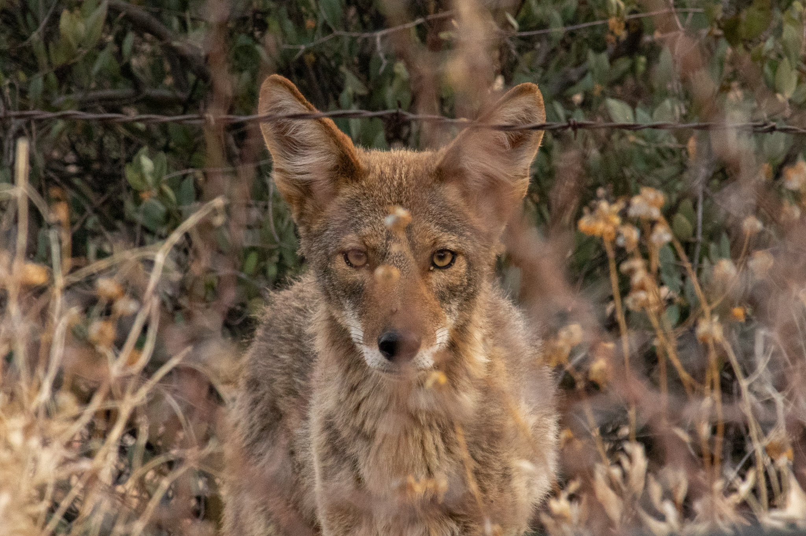

Antelope Jackrabbit

A rare sight to see on the homestead as they are skiddish and impossibly fast! Topping out at a recorded 45MPH to evade predators.
- Fresh desert grasses form the backbone of their diet year-round.
- They do not drink water directly; instead they obtain most of their hydration from the plants they eat, especially cacti
- Feed mainly at dawn, dusk, and night to avoid daytime heat.
House Wren

A pair of House Wrens share a nest on our patio. At times they have been known to fly into our home, making their namesake very fitting. My children call them Wrendle and Gwendle!
- The bulk of their diet consists of insects and other small invertebrates like beetles, grasshoppers, and moths.
- Active and opportunistic foragers, using quick, jerky movements to glean insects from foilage, bark, crevices, and the ground.
- House Wrens play an important role in controlling pest populations in gardens, forests, and other ecosystems.
Coyote

Windy Hill Homestead is located on 20 acres in the rural Arizona high desert. Coyotes roam and can be heard every night. Precautions have to be taken to keep us and our livestock safe.
- Opportunistic omnivores, eating anything from small mammals, reptiles, eggs, fruits, and garden vegetables.
- Often hunt alone at night and dawn, stalking and pouncing on small prey.
- During the warmer months their diet relys on mesquite beans and cactus fruits, wheras in the winter they hunt or scavange.
Wildlife Watching
Here are some tips for safe wildlife watching if you find yourself out on an adventure:
- Allow Wildlife to be WILD.
-
- Make every effort to avoid harassing wildlife.
- Keep your distance. Getting too close could pose a danger if the animal perceives you as a threat.
- Allow wildlife free access to food, water or their young.
- Avoid chasing wildlife, as this can sap the animal of its energy and cause it stress.
- Do not feed wildlife.
- Respect the land.
-
- Step lightly and leave rocks, logs, flowers, nests and other elements as you found them.
- Leave no trace that you were there.
- Leave your surroundings better than you found them.
- Pack it in, pack it out.
- Be Prepared.
-
- Bring water and food
- Wear appropriate clothing, Arizona evenings can get COLD!
- Let someone know where you are going and when you plan on being back.
- Carry a whistle or signaling device for safety.
This information is thanks to the City of Flagstaff.